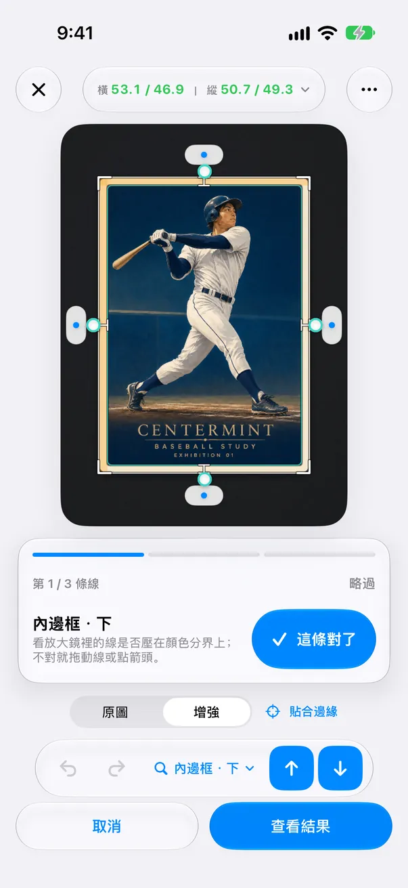
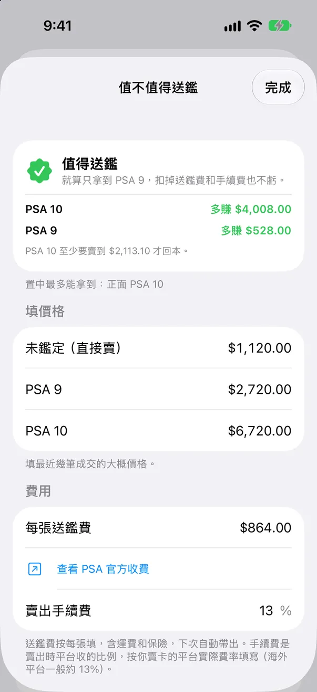
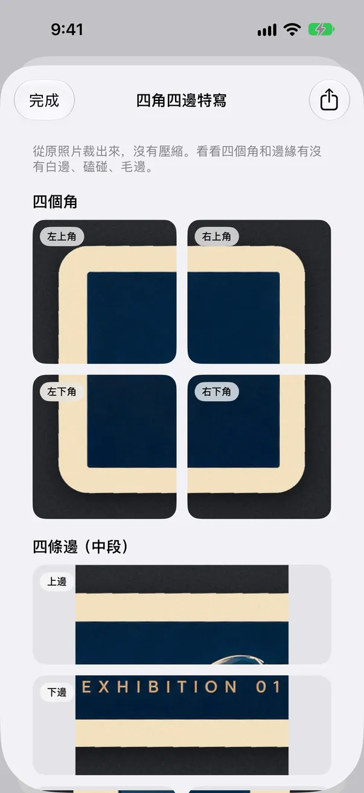
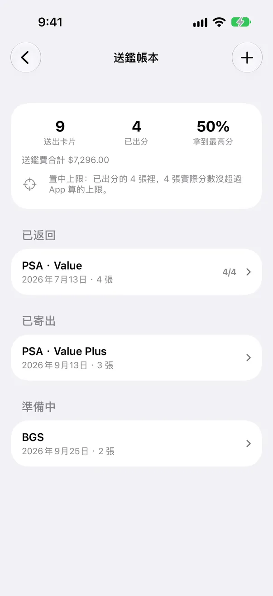
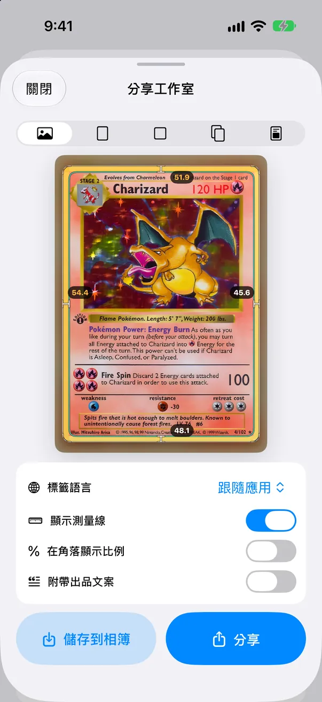

逐條對線 免費
有需要確認的線時，編輯器依「最不確定」的順序一條條帶你看。放大鏡自動對準這條線，點「這條對了」進入下一條；不對就直接拖到正確位置。
告訴你為什麼要檢查 免費
每一步用一句話說明原因：反光、模糊、太暗、解析度低、墊子和卡邊顏色太像、沒找到印刷邊框等。能靠重拍解決的會直接告訴你。

先把邊距量準，App 不確定的線一條條確認，再決定這張卡值不值得花送鑑費。
CenterMint 是一款給集換式卡牌與球員卡收藏者使用的 iPhone App。它根據裸卡照片量測左右、上下的置中比例，對照 PSA、BGS、CGC 公開的置中標準，幫你在花錢送鑑之前做判斷。它是獨立工具，只量置中，不預測完整鑑定分數。
會提醒你哪裡要再看一眼的量測
第 1 步，共 5 步
把卡從卡套取出，平放在和卡邊顏色反差明顯的素色墊子上，在均勻光線下拍照，或匯入照片、掃描圖。
自動測量只支援裸卡。 裝在卡套、硬卡套或評級殼裡的卡，需要自己手動對齊四條邊。偵測到卡套時，App 會提示並切換到手動對線。
第 2 步，共 5 步
CenterMint 自動給出卡牌外緣和印刷內框。有不確定的線時，會用放大鏡一條條帶你看，並說明原因。
裸卡自動量測：金邊、銀邊逐邊次像素貼合；在布面、花紋墊上，外框也更不容易認錯。
第 3 步，共 5 步
確認或微調每一條線，左右、上下比例即時更新。
放大鏡 2.0：顯示真實像素、像素格線和邊緣明暗曲線，對邊連動，方便兩側比較。
免費版量測同樣使用全解析度原圖。
第 4 步，共 5 步
背面也量一次，正反面分別對照 PSA、BGS 或 CGC 標準。

第 5 步，共 5 步
送鑑前看一遍四角四邊特寫，再用最近的成交價算一下「值不值得送鑑」。
1.9 版圍繞一個要花錢的決定：這張卡值不值得送鑑。
1.9 版新功能
有需要確認的線時，編輯器依「最不確定」的順序一條條帶你看。放大鏡自動對準這條線，點「這條對了」進入下一條；不對就直接拖到正確位置。
每一步用一句話說明原因：反光、模糊、太暗、解析度低、墊子和卡邊顏色太像、沒找到印刷邊框等。能靠重拍解決的會直接告訴你。

填上未鑑定、PSA 9、PSA 10 的成交價（也支援 BGS、CGC），再填送鑑費和賣出手續費，App 會算出送鑑後比直接賣裸卡多賺或虧多少，以及 PSA 10 至少要賣多少才回本。置中拿不到的分數會自動排除。價格由你自己填；日本地區可一鍵開啟メルカリ、ヤフオク的已售紀錄。

從原照片以原解析度裁出四個角和四條邊的中段，放大查白邊、碰傷，還能匯出一張拼圖分享。App 只負責讓你看清楚，不替四角和表面打分。


從範例卡圖片依原解析度裁出的四個角與四條邊。白邊要你自己判斷，App 不評分。

記下每次送了哪些卡、花了多少錢、回來幾分。可以看到拿滿分的比例、送鑑費總花費，以及實際分數是否沒超過 App 量出的置中上限。

分享圖以卡牌照片為主，只在右下角放一個小 logo。

批次 2.0（Pro）：連拍進佇列，只看需要檢查的卡，依置中排序，一鍵儲存。決策助手把卡分成「送評 / 先補齊（如背面還沒量）/ 低於目標」，並可匯出送鑑清單 PDF。
送鑑清單 PDF
卡落到切割墊上，外框和印刷內框被找出來，比例隨之出現；偏心的那一張會被標出來。
畫面裡是為本頁畫的抽象卡。在 App 裡，你測的是自己卡的照片。
Pro 提供月訂閱、年訂閱與一次買斷，方案與當地價格以 App 內顯示為準。訂閱會自動續訂，直到你在 Apple 帳號設定中取消。
量測在你的 iPhone 上完成，不需要註冊帳號。只有你主動同意時照片才會離開手機：修正分享預設關閉；批次匯入前會詢問一次，可以拒絕。你填的價格和送鑑帳本都只存在本機。詳情請見隱私權政策。 隱私權政策（英文）
App 支援繁體中文、簡體中文、英文、日文、韓文及越南文。
自動量測只支援裸卡。卡套、硬卡套和評級殼有自己的邊緣和反光，App 會把塑膠邊當成卡邊。偵測到卡套時，App 會提示並切換到手動對線，由你自己對齊四條卡邊。想要最準的結果，請取出卡片再重拍。
取決於照片品質和你確認的線。差別其實很小：左右各 3 公釐邊的卡，從 50/50 到 55/45 只差 0.3 公釐。CenterMint 對金邊、銀邊逐邊做次像素貼合，並標出沒把握的線，但不宣稱單一的準確率。被標出的線請用放大鏡確認，模糊或反光的照片請重拍。
PSA 公布的 Gem Mint 10 參考為正面約 55/45 以內、背面 75/25 以內；PSA 9 為正面約 60/40、背面 90/10。BGS 與 CGC 有各自公布的標準，部分數值只適用於特定卡種。置中只是評分項目之一，置中好也不代表一定拿高分。送鑑前請查看官方頁面。
每個分數依「多賺 =（鑑定後售價 − 裸卡售價）×（1 − 賣出手續費）− 送鑑費」計算。不論賣裸卡或鑑定卡都要付手續費，所以只對差價乘手續費。回本線是「最高分售價至少 = 裸卡售價 + 送鑑費 ÷（1 − 手續費）」。就算只拿到次一檔（如 PSA 9）也不虧，就顯示「值得送鑑」；只有拿到最高分才賺，就提醒先確認四角和表面；哪一檔都不賺，或置中拿不到賺錢的分數，就顯示「不建議送鑑」。App 不估算拿 10 分的機率。
不會。App 不串接 eBay 或任何價格服務，也不猜價格。最近的成交價由你自己填，依卡片儲存在本機。日本地區有按鈕，可用卡名和編號直接開啟メルカリ已售、ヤフオク已成交的搜尋結果。
不評判。「四角四邊特寫」是從原照片以原解析度裁出四個角和四條邊，讓你自己放大看。手機照片可能拍不出極細的瑕疵，有疑問的地方請用放大鏡在強光下再看一次。
免費：全解析度置中量測、放大鏡、逐條對線、對照 PSA/BGS/CGC 標準、一次最多 5 張的批次體驗，以及任選 1 張卡試用送鑑前檢查（值不值得送鑑、四角四邊特寫）。Pro：所有卡都能用送鑑前檢查，另有送鑑帳本、批次掃描、附送鑑清單 PDF 的決策助手、CSV 與 4K 匯出、預設和移除廣告。
沒有。CenterMint 是獨立開發的 App，置中標準只是依各公司公布的標準做對照，實際鑑定結果可能不同。
量測在 iPhone 本機完成，不需要帳號。只有你開啟修正分享（預設關閉），或在批次匯入時同意那一次提示，照片才會上傳，而且可以拒絕。價格和送鑑帳本只存在本機。